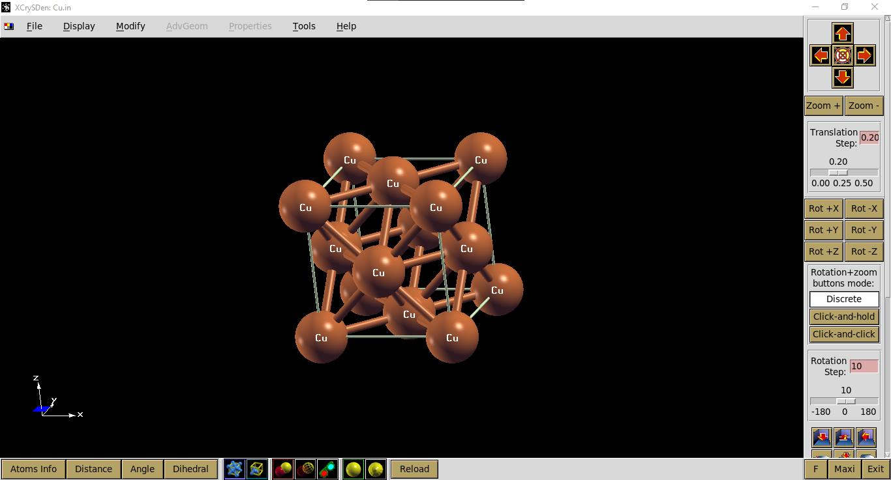
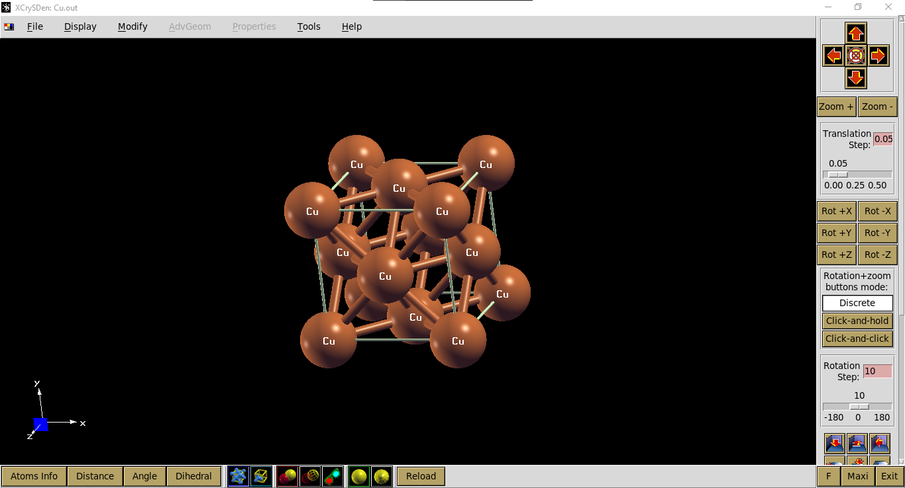
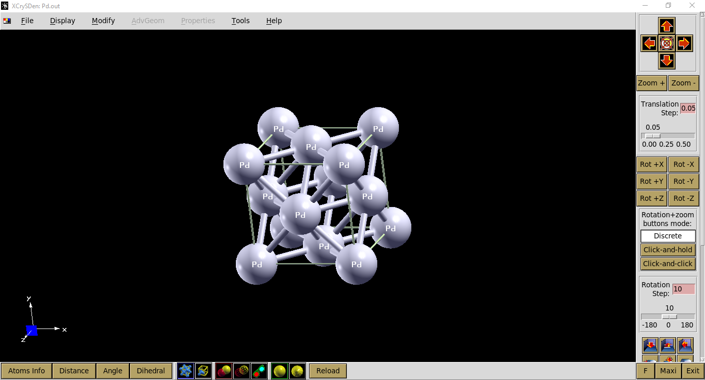
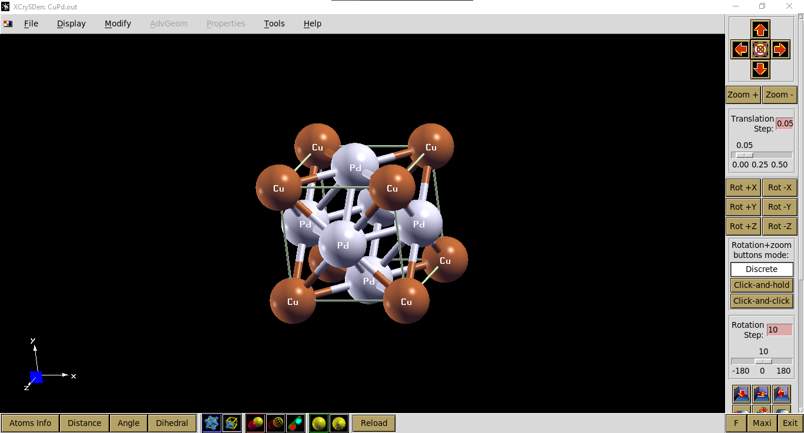

I am bored. So I create this tutorial. Hope you enjoy it. By the way I will use Bahasa this time.
Pendahuluan
Tujuan dari tutorial ini adalah untuk menghitung energi formasi bulk CuPd. Formasi CuPd dapat dinyatakan dengan persamaan reaksi berikut.
Dalam tutorial ini kita akan menggunakan struktur kristal FCC yang kita defenisikan menggunakan conventional cell.
Ada berbagai jenis kalkulasi yang disediakan pw.x Quantum ESPRESSO (QE). Untuk sistem bulk, kalkulasi yang sesuai adalah vc-relax. Pada jenis kalkulasi ini, optimisasi dilakukan baik pada posisi atom-atom maupun ukuran cell. Ada tiga parameter kalkulasi yang penting: kinetic energy cutoff for wavefunctions (Ecutwfc), kinetic energy cutoff for charge density (Ecutrho) dan kpoint. Sejatinya, tiga parameter ini perlu dioptimisasi untuk mendapatkan nilai yang memberikan hasil kalkulasi yang akurat dengan beban komputasi minimal. Namun untuk alasan kesederhanaan, tutorial ini akan melompati tahap optimisasi tersebut. Kita akan menggunakan nilai Ecutwfc 50 Ry, Ecutrho 500 Ry, dan K-point 10. Input file QE untuk sistem-sistem kita ada pada subsection berikut. Silakan merujuk pada QE - pw.x input descrioption untuk memahami setiap keyword yang digunakan.
1. Cu
Input file:
&CONTROL
calculation='vc-relax',
restart_mode='from_scratch',
prefix='Cu',
pseudo_dir='/pslibrary-master/pbe/PSEUDOPOTENTIALS',
outdir='./tmp/',
/
&SYSTEM
ibrav=0,
celldm(1)=7.5,
nat=4,
ntyp=1,
ecutwfc=50,
ecutrho=500,
occupations='smearing',
degauss = 0.1d0
/
&ELECTRONS
conv_thr=1.D-6,
/
&IONS
ion_dynamics = 'bfgs'
/
&CELL
cell_dynamics='bfgs'
/
ATOMIC_SPECIES
Cu 63.546 Cu.pbe-dn-kjpaw_psl.1.0.0.UPF
ATOMIC_POSITIONS (alat)
Cu 0.00 0.00 0.00
Cu 0.50 0.50 0.00
Cu 0.50 0.00 0.50
Cu 0.00 0.50 0.50
K_POINTS automatic
10 10 10 0 0 0
CELL_PARAMETERS {alat}
1.0 0.0 0.0
0.0 1.0 0.0
0.0 0.0 1.0
Perhatikan line pseudo_dir=. Keyword tersebut perlu diisi dengan direktori tempat pesudopotential. Pseudopotential yang digunakan pada tutorial ini dapat diunduh pada taut ini.
Kita dapat mengecek visualisasi input file tersebut menggunakan xcrysden, seperti ditampilkan pada gambar berikut.

Input file tersebut siap untuk dikalkulasi penggunakan pw.x QE. Kalkulasi akan selesai setelah muncul tulisan JOB DONE pada output file. Jika kalkulasi konvergen akan ada tulisan bfgs converged pada output file. Jika tidak maka kita perlu meninjau kembali input file kita.
Energi total dari sistem yang kita kalkulasi ada pada line ! total energy = yang paling terakhir. Selain energi, besaran penting yang lain yang dapat kita ekstrak adalah lattice constant. Tapi nanti aj ya jelasinnya, agak ribet, hehe.
2. Pd dan CuPd
Input file untuk Pd dan CuPd dapat diunduh pada taut ini.
3. Ringkasan output file
- Total energy Cu (E_Cu) = -852.43198761 Ry (untuk 4 atom Cu pada input file).
- Total energy Pd (E_Pd)= -1324.46554467 Ry (untuk 4 atom Pd).
- Total energy CuPd (E_CuPd)= -1206.46350739 Ry (untuk 1 atom Cu dan 3 atom Pd).
Untuk menghitung energi formasi (E_form), kita harus menyetarakan jumlah atom yang terlibat dalam reaksi.
Visualisasi output file:



That's it. I know it is kinda boring tutorial. So let's watch kimono mom once you are done with this.